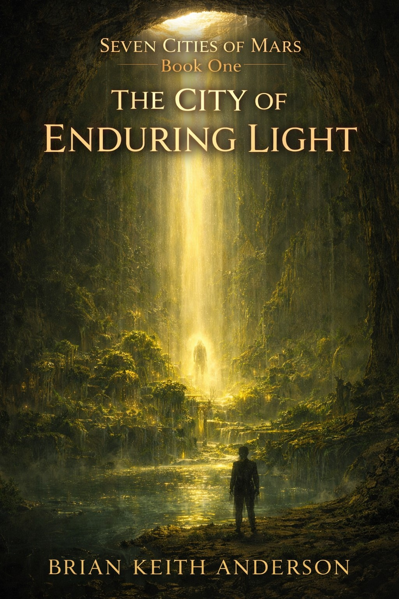
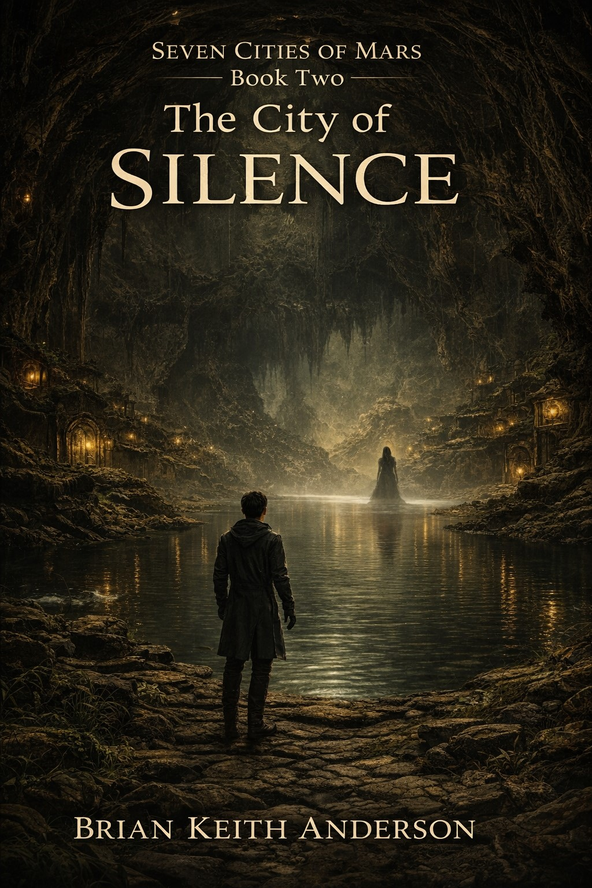
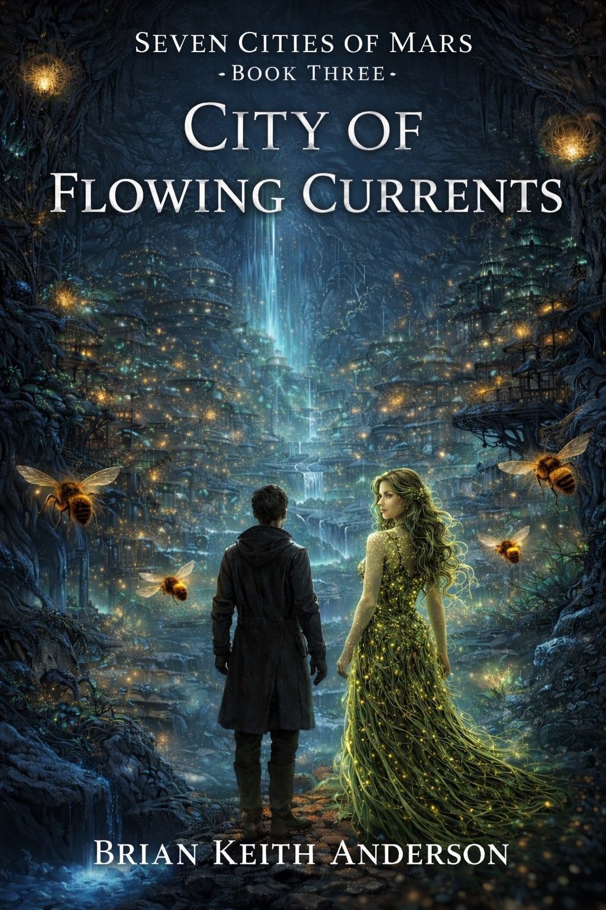
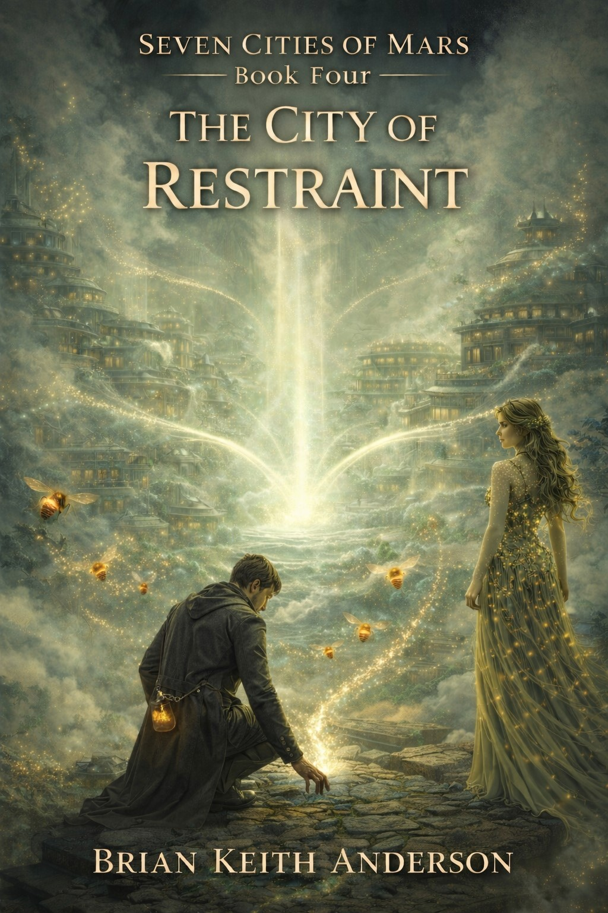
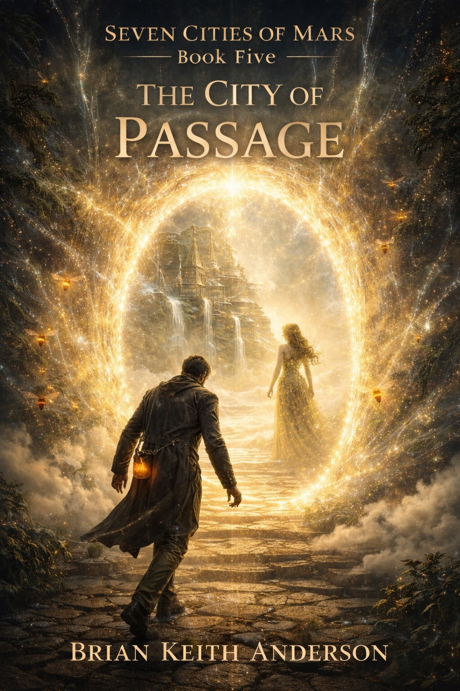
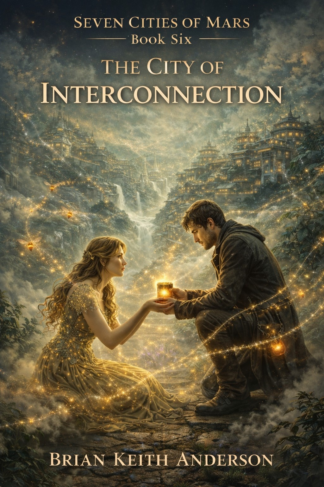
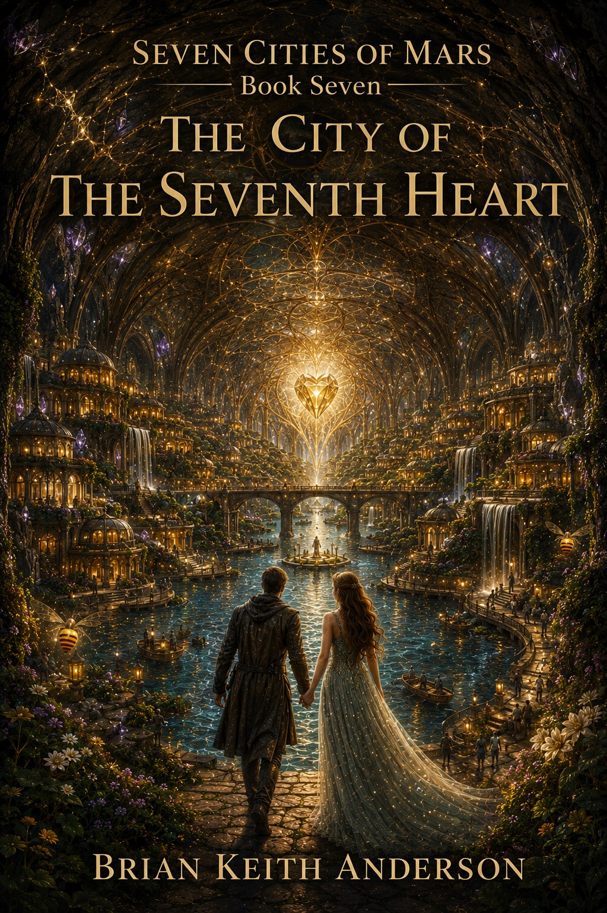

The City of Enduring Light
Book One
Seven ancient cities awaken beneath Mars—each holding a living frequency tied to patience, movement, emergence, restraint, passage, interconnection, and unity. As Asa and Saxifraga step beyond the bogs, they enter a world no longer sleeping, but remembering.
The bogs restored life. Now the cities restore purpose. Beneath the Martian surface, ancient civilizations begin to awaken—each aligned to a deeper law of existence. As resonance returns, humanity is not summoned—but invited.
The Seven Bogs restored life. The Seven Cities awakened memory. Beyond the cities, a new calling spreads across Mars as the Children of Resonance begin summoning the ancient races home.

Book One

Book Two

Book Three

Book Four

Book Five

Book Six

Book Seven